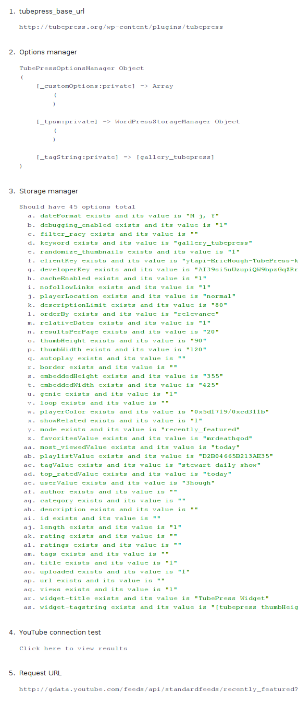

1. Introduction
TubePress is a PHP library that displays beautiful YouTube video galleries in your web site. It's highly configurable and easy to use. Check out a demo gallery here.
There are two different TubePress packages available:
- A WordPress plugin (free!)
- A stand-alone library for use anywhere that supports PHP (only $10)
Both packages are released under the GPLv3. TubePress was created, is developed and maintained by Eric Hough
2. Download
2.1 Zip files
The latest version of TubePress can always be downloaded as a zip file from http://tubepress.org/download2.2 Subversion
Interested in using the very latest version of TubePress? You can use any Subversion client to check out the latest developmental build of the WordPress plugin.2.2.1 From the command line
If you have command line access to your server, and have an svn client in your path, this method is the easiest.- Change directories to wp-content/plugins
- Make sure you've removed any existing installs of TubePress from this directory
- Execute
svn checkout http://tubepress.googlecode.com/svn/trunk/ tubepress
- Change directories to wp-content/plugins/tubepress
- Execute
svn update
2.2.2 Using FTP
You'll need to check out the latest build locally (i.e. to your desktop machine) and then upload it to your server using FTP.- Use any SVN client to browse to http://tubepress.googlecode.com/svn/trunk/
- Checkout the trunk directory to a local directory called tubepress
- Upload the tubepress directory you just created to your WordPress installation at wp-content/plugins
3. WordPress Plugin
As a WordPress plugin, TubePress lets you easily insert custom video galleries throughout your WordPress-powered blog.3.1 Quick Start
TubePress can be managed just like any other WordPress plugin. See the WordPress docs for more information.
- Download the plugin from http://tubepress.org/download
- Unzip into your plugins directory (wp-content/plugins)
- Activate TubePress from Site Admin > Plugins
- Configure from Site Admin > Settings > TubePress
- Type
[tubepress]
in a post or a page where you'd like to insert your gallery (this is actually the simplest form of a TubePress shortcode). See the image below for an example.

This will result in something like the following…

3.2 Multiple galleries
The options in Settings > TubePress are the global options for TubePress. The real power of the plugin lies in the ability to put multiple galleries on multiple pages. You can do this by using TubePress shortcodes on your posts/pages.
For example, say on one page I want to display a gallery of videos that are tagged with "football". On this page, I would type
[tubepress mode='tag', tagValue='football']
on the page where I want the gallery to show up. And say on another page I want to display a gallery with the default (global) options that were set in Settings > TubePress. On this page I would type
[tubepress]
where I wanted the gallery to show up. You can follow this procedure for unlimited galleries on unlimited posts/pages. Just use any TubePress shortcode to control the gallery content. Get creative!
3.3 Upgrading
Upgrading is usually just a matter of copying the latest version of TubePress over your existing installation. However, if you want to be sure there are no problems, follow these directions in order.
- Remove your existing TubePress install directory (wp-content/plugins/tubepress)
- Unzip the latest version of TubePress into (wp-content/plugins)
- Visit Site Admin > Settings > TubePress once initialize your options
3.4 Sidebar Widget
The TubePress plugin comes with widget functionality, which allows you to place a customizable list of videos in your blog's sidebar. Here's an example of the widget's output:

There are no separate installation instructions; if you've installed and enabled the TubePress plugin then you're done. Please see the WordPress widget documentation for general info on how to enable and disable widgets.
This is what the TubePress widget control looks like:

In the "Title" section of the widget control, enter the text you'd like for the sidebar's header.
To customize which videos show up in your sidebar, just use a TubePress shortcode. Please note that by default, the TubePress widget will use the following shortcode:
[tubepress resultsPerPage='3', views='false', description='true', descriptionLimit='50', playerLocation='popup', thumbHeight='105', thumbWidth='135']
Of course, like any TubePress shortcode, you can override any setting you like.
4. TubePress Shortcodes
TubePress shortcodes are small snippets of text that allow you to easily control the content, style, and behavior of TubePress galleries. There are very similar to WordPress shortcodes, with some minor syntax differences.
TubePress will replace any TubePress shortcodes with a video gallery. Each gallery can be configured completely independently from the others, based on the content of the shortcode.
The simplest shortcode is
[tubepress]TubePress will replace this shortcode with a video gallery with the default settings. You can override each TubePress setting by providing shortcode attributes, which are comma-separated name-value pairs that you insert between the square brackets. They all follow the pattern
name='value'Please note the single quotes around the value!
So for instance, say I wanted a gallery with
- my favorite videos
- 10 videos per page
- the description included under each thumbnail
- that plays videos using lightWindow
[tubepress mode='favorites', favoritesValue='3hough', resultsPerPage='10', description='true', playerLocation='lightwindow']
4.1 Gallery Options
These settings control which group of videos the gallery will display.
| Setting | Description | Valid Values | Example |
|---|---|---|---|
| mode | Which set of videos will be displayed |
favorites featured mobile most_discussed most_linked most_recent most_responded playlist most_viewed top_rated tag user |
[tubepress mode='featured'] |
4.1.1 Gallery Descriptions
| Mode name | Description |
|---|---|
| favorites | "Favorite" videos of the given YouTube user. Accompany this mode setting with a favoritesValue
attribute to define the YouTube user name. For instance[tubepress mode='favorites', favoritesValue='3hough'] |
| featured | The lastest "featured" videos on YouTube's homepage |
| most_discussed | The most-commented videos on YouTube |
| most_linked | Videos with the most links |
| most_recent | Videos recently uploaded to YouTube |
| playlist | Videos from the given playlist. Accompany this mode setting with a playlistValue attribute to define
which YouTube playlist to retrieve. For instance[tubepress mode='playlist', playlistValue='6813408AE8D50E6F'] |
| mobile | Videos suitable for mobile devices |
| user | Videos uploaded by a specific user. Accompany this mode setting with a userValue attribute to define the
YouTube user name. For instance[tubepress mode='user', userValue='3hough'] |
4.2 Video Display Options
These settings control the overall viewing experience for the user
| Setting | Description | Valid Values | Example |
|---|---|---|---|
| playerLocation | How the user will view each video. See secion 4.2.1 for descriptions of these values. |
normal popup youtube |
[tubepress playerLocation='shadowbox'] |
| orderBy | The sort order of the video thumbnails |
updated viewCount rating relevance |
[tubepress orderBy='viewCount'] |
| resultsPerPage | How many video thumbnails to display on a single page | Any integer x such that 0 < x <= 50 | [tubepress resultsPerPage='30'] |
| thumbHeight | Vertical size (in px) of thumbnails | Any integer x such that 0 < x <= 90 | [tubepress thumbHeight='45'] |
| thumbWidth | Horizontal size (in px) of thumbnails | Any integer x such that 0 < x <= 120 | [tubepress thumbWidth='60'] |
4.2.1 Video Players
| Player name | Description |
|---|---|
| normal | Plays videos in an embedded Flash player above the video thumbnails |
| popup | Plays videos in an HTML popup window |
| youtube | Sends user to the video's original YouTube page to view the video |
4.3 Embedded Player Options
These settings apply to the embedded Flash player from YouTube
| Setting | Description | Valid Values | Example |
|---|---|---|---|
| autoPlay | Toggles start of video playback without user intervention |
true false |
[tubepress autoPlay='true'] |
| border | Toggles frame around embedded player |
true false |
[tubepress border='true'] |
| embeddedHeight | Vertical size (in px) of embedded player | Any positive integer | [tubepress embeddedHeight='true'] |
| embeddedWidth | Horizontal size (in px) of embedded player | Any positive integer | [tubepress embeddedWidth='true'] |
| genie | Toggles display of "genie" menu during video playback |
true false |
[tubepress genie='true'] |
| loop | Toggles repeat of videos without user intervention |
true false |
[tubepress loop='true'] |
| playerColor | Primary and secondary colors of embedded player | Two HTML color values in hex, combined with a single forward slash | [tubepress playerColor='0xffaabb/0xaa2233'] |
| showRelated | Toggles display of related videos after playback |
true false |
[tubepress showRelated='true'] |
4.4 Video Meta Display
These settings control what information gets printed out below each video thumbnail
| Setting | Description | Valid Values | Example |
|---|---|---|---|
| author | Toggles display of video author below thumbnails |
true false |
[tubepress author='true'] |
| category | Toggles display of video category below thumbnails |
true false |
[tubepress category='false'] |
| description | Toggles display of video description below thumbnails |
true false |
[tubepress description='false'] |
| id | Toggles display of video ID below thumbnails |
true false |
[tubepress id='true'] |
| length | Toggles display of video run time below thumbnails |
true false |
[tubepress length='false'] |
| rating | Toggles display of average video rating below thumbnails |
true false |
[tubepress rating='true'] |
| ratings | Toggles display of video rating count below thumbnails |
true false |
[tubepress ratings='true'] |
| tags | Toggles display of video tags below thumbnails |
true false |
[tubepress tags='false'] |
| title | Toggles display of video title below thumbnails |
true false |
[tubepress title='true'] |
| uploaded | Toggles display of video upload time below thumbnails |
true false |
[tubepress uploaded='false'] |
| url | Toggles display of video URL on YouTube? below thumbnails |
true false |
[tubepress url='false'] |
| views | Toggles display of video view count below thumbnails |
true false |
[tubepress views='true'] |
4.5 Advanced Options
Various features that casual users will not likely need/want to adjust
| Setting | Description | Valid Values | Example |
|---|---|---|---|
| dateFormat | Formatting of date information for videos. See http://us.php.net/date for examples | Any valid string as defined by http://php.net/date | [tubepress dateFormat='l jS \of F Y h:i:s A'] |
| debugging_enabled | Toggles ability to perform remote debugging |
true false |
[tubepress debugging_enabled='false'] |
| randomize_thumbnails | Toggles random thumbnail selection for each video (each video comes with several thumbnails) |
true false |
[tubepress randomize_thumbnails='false'] |
| filter_racy | Toggles filtering of "racy" videos |
true false |
[tubepress filter_racy='true'] |
5. Troubleshooting
5.1 Enable debug mode
This mode will print out tons of debugging information. To use it, you just need to add tubepress_debug=true to the URL string (in your browser's address bar). For instance, if the TubePress page you're trying to debug has an address of
http://ehough.com/?page_id=19then you should add tubepress_debug=true to the URL to enable debugging
http://ehough.com/?page_id=19&tubepress_debug=trueYou should see the debugging information displayed above any galleries you have. The following image shows generally what you can expect to see

5.2 YouTube Connection Test
Some web servers place restrictions on what PHP scripts are allowed to execute. TubePress needs the ability to open network connections to remote servers. One way to verify that TubePress has this ability is to run the YouTube connection test. You can find a link to the test in the debug output (see section 5.1). The test will attempt to retrieve the HTML content of YouTube's homepage, and then it will execute a sample video query against YouTube's API. The result of the latter will be printed to the screen as plain XML.5.2 Discussion Forum
Still can't solve your issue? Try searching or posting in the TubePress discussion forum, hosted by Google Groups. You'll need a Google account to post.
5.3 Open a trouble ticket
If you can't find a solution to your problem in the discussion forum, someone may have already submitted a trouble ticket. The current list of tickets can be found at http://code.google.com/p/tubepress/issues/list. Please feel free to submit a trouble ticket. Note that you'll need a Google account.
6. Contributing
6.1 Submit a patch
Patches are always welcome! You'll receive full credit for your contribution, of course. Here's how to submit- Checkout the trunk version of TubePress (see section 2.2)
- Generate your patch against it
- Submit your patch as an attachment to a new issue report at http://code.google.com/p/tubepress/issues/list
6.2 I18N
As of version 1.6.5, TubePress can be translated into any language using the gettext framework. To submit a translation...
- Translate the words/phrases in this file from English to your native language
- Attach the translated file as an attachment to a new issue. Please be sure to note your two-digit country code and your two-digit language code.
You will, of course, receive full credit for your contribution to an open source project! If you're interested in the gory details of how it works, I highly recommend reading WordPress's excellent i18n documentation.
6.3 Donate
TubePress is an open source project. I've spent many long nights working on this project. If you enjoy the software, please consider a donation. No amount is too small. Thanks!